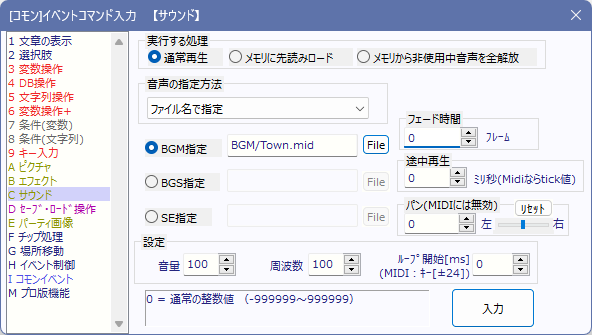
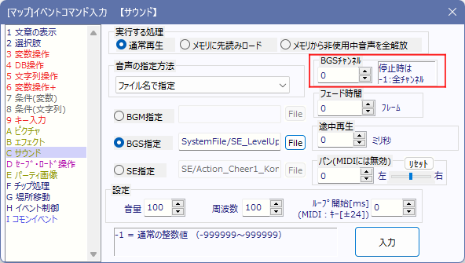
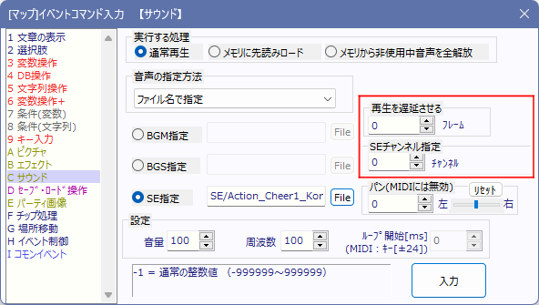

イベントコマンド 【サウンド】
音楽や効果音を再生します。

【お知らせ：長時間プレイしていると音声がすべて再生されなくなる問題について】
Ver2.271～3.105のバージョンにおいて、「Ver2.270以前に入力された【サウンド】コマンド」でSEを32678回再生するとそれ以降の音が完全に鳴らなくなるバグがありました。
この問題はVer3.106で解消されましたので、必要ならEXEのアップデートをお願いいたします。
（アップデートしなくても、SEを使っている【サウンド】コマンドを「修正」→「OK」すればそのコマンドでは問題は起きなくなります）
【各部の説明】
・実行する処理
- 通常再生 … BGMやSEの再生を行います。基本的にはこれだけで十分です。
- メモリに先読みロード … BGMやSEを、データだけメモリにロードしておきます、再生はしません。
- メモリから非使用中音声を全解放 … 現在再生されていない音声を全てメモリから解放します
- メモリから手動解放（SEのみ） … 指定したメモリ内のSEのデータを解放します。
→ 正常に動作しないため、Ver2.20から削除されました。
・音声の指定方法
サウンドの呼び出し方法を指定します。
なお、直接指定と変数呼び出しの方法ではシステムDBに登録済みのデータしか読み込むことはできません。
- ファイル名で指定 … ファイルのアドレスを指定して読み込みます。\sや\cdbなどの変数も指定可能です。
- 直接指定 … システムデータベースに登録したデータから一つ再生するサウンドを選択します。この中の「（停止）」を選ぶと音声を停止できます。
※なお、SEの(停止)は、「遅延」を指定して予約したSEも全て消去されます。
- 変数呼び出し … 再生する音楽の番号を変数で指定します。
・BGM指定・BGS指定・SE指定
この3つの欄はそれぞれ、システムデータベースのタイプ1～3から内容が読み込まれています。
この欄を最新の状態にするには「音声の指定方法」を変更してください。
『ファイル名で指定』の場合はここにファイルパスを指定します。
・フェード時間（BGM・BGS専用）
BGM・BGS時で、音楽のフェード時間をフレーム数で指定します。徐々に音楽が流れ始めたり、徐々に音楽が消えたりする演出時に使います。
ただし、ゲームの基本設定で「ハードウェア音源」に設定されている場合には機能しません。
・途中再生 (BGM・BGSの場合のみ)
指定した時間（MP3・OGG・WAVならミリ秒単位/MIDIならTick数単位）だけ、曲の途中から再生を開始できます。※SE指定では使用できません。
・パン（BGM・BGS・SEすべて） (Ver3.50より)
音量を左または右に偏らせます。数値の範囲は-255（左）、0（中央）、255（右）です。
・音量[%]/周波数[%]/ループ開始[ms BGM・BGSのみ]
『ファイル名で指定』の場合のみ指定できます。内容はシステムデータベース 【各タイプの説明】
のタイプ2と同じです。
※BGM・BGSで同じファイルを読み込んだ場合は、新たな音量と周波数設定に変わるだけで曲自体はそのまま再生され続けます。
・キー変更機能[MIDIのみ]
MIDI再生時に限り、「ループ位置」の代わりに「キーの上下」が設定できます。
キーを上げると音が高く、キーを下げると低くなります。微妙な雰囲気のチューンに最適です。
【BGS選択時専用の項目】

・BGSチャンネル (BGSの場合のみ) (Ver3.50より)
BGSの「チャンネル」を設定できます。BGSは複数のチャンネルで同時に再生できます。
全てのBGSチャンネルを停止させたい場合は「-1」チャンネルを停止させてください。
【SE選択時専用の項目】

・再生を遅延させる（SE専用）
SE時のみ有効な欄です、指定フレームだけ再生開始を遅らせます。
・SEチャンネル指定 (SEの場合のみ)
SE再生時のみ、「チャンネル」を設定できます。たとえば「1チャンネルと2チャンネルでそれぞれSEを再生」したとき、「1チャンネル側のSEだけ停止させる（2チャンネルはそのまま再生させる）」ということができます。
「停止」時にチャンネル「-1」を指定すれば、「全チャンネル」のSEを停止させることができます。
→ 使用例としては「ボイス関連」が有力で、例えば格闘ゲームで「(打撃音などを止めずに)同じキャラのボイスが重複して再生されないようにする」といった用途で使える状況が多いと思います。
【隠し機能】 ファイル名の指定で「文字列変数」を指定することもできます（例：\s[1]や\cself[6]）。
その文字列変数に、複数行にかけて
「ファイル名<改行>音量(%)<改行>周波数(%)<改行>ループ開始位置(ms・BGM・BGSのみ)」
と記述した文字列を代入しておくと、エディタ側で入力した値を無視して
文字列に書かれた数値で音量・周波数・ループ設定が行われます。
例：「Sound\テスト.wav
100
120」 と記述した文字列を指定すると、テスト.wavを音量100％、周波数120％で再生する。
【隠し機能】 ループ位置を「0」にした場合に限り、
OGG・MP3ファイルのLOOPSTARTタグ（※ファイルの先頭1KB内にある場合のみ）を自動で読み込み、
その時間をループ開始位置として自動設定する機能が搭載されています。
※LOOPLENGTHも読み込めます。ループ長を指定できます。
※MP3の場合でも、作曲者情報など文字を格納できるところならどこでも
「LOOPSTART=123456」 と言う文字列が含まれていれば動作します。
↓サウンドファイルに上記のループ設定を行えるツールも存在します
【FOLE（FICUSEL Ogg Loop Editor）】
http://forest.watch.impress.co.jp/docs/review/693911.html
【SEの音量が大きすぎるとBGMが一時的に小さくなる？】 (2024/3/19追記)
開発側としては意図してそうしているわけではないのですが、「BGM音量が大きい」ときに「200%などの大きな音量のSEを再生」した場合、音量限界の制限にかかっているのか、BGM音量が一時的に小さめになってしまう場合があります。
上の例の場合、体験としては「SE再生中にBGM音量が小さくなり、SE終了後にBGMの音量が元に戻った」ように感じられるようです。
この現象は不具合ではなくライブラリ側などの都合でこういった挙動になっているようですので、もし気になる場合は音量をうまく変更してこの現象が起きないよう調整してみてください。
【BGSのチャンネル再生は「ファイル名指定」で行う方が自由がききます】
BGSは、「システムDBから直接選択」や「変数で指定」した場合、BGMと全BGS内で「同じファイル名」の音声を「異なるタイミング」で複数再生させることはできません。これはシステムDBから再生する場合、内部的な再生枠を共有しているためです。
「ファイル指定」で再生した場合のみ、「同じファイル名」でも時間をずらして再生可能です。
【SE（効果音）の多重再生させたい場合はチャンネル別に】
同じSEを複数連続でウェイトを挟んで同時再生した場合、2つめのSEが再生され始めると、すでに鳴っている最初のSEは停止されてしまいます。
もし同じSEを停止させずに次々に再生したい場合は、以下の手順を取ってください。
・複数のチャンネルでそれぞれSEを再生する
SEは1チャンネルごとに同じ1音を出せるので、チャンネルを変えて同じSEの同時再生を行ってみてください。
たとえば3連射まで音を鳴らしたいSEは、1発目をチャンネル1、2発目をチャンネル2、3発目をチャンネル3、4発目をチャンネル1（1に戻る）……と順繰りで再生させることで、3重まで音を再生することができます。
【音声の全リセット】
「ファイル名で指定」→BGM指定に「INITIALIZE」とだけ入れて実行すると、「音声メモリの全リセット」が可能です。
その際、BGMやBGSは停止してしまうのでご注意ください。
音声周りでバグが発生してどうしようもない場合への対策として用意されていますが、基本的には使う必要はありません。
【BGM・BGSを「ファイル名」指定で再生中、「同じファイル名」で「再生」すると再生途中のままパラメータ変更可】
「ファイル名」指定であるファイル名の曲を再生中、それと「同じファイル名」（BGSの場合は「チャンネル」も同じにする）で「再生」を行うと、再生を途切れさせずに「音量」「周波数」「途中再生」「パン」を変更できます。
※ただし「途中再生」だけは、再生位置によっては処理が重くなる場合があります。